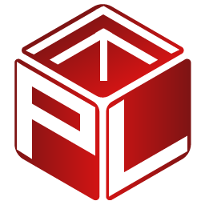

51.22° N · 4.40° EAntwerpen, België
Software Developer Test Automation
Julie
Toussaint
Ik bouw geautomatiseerde tests die complexe logistieke software end-to-end controleren: van de Windows-desktop en de Android-handheld tot diep in de Oracle-database.
- Functie
- Test Automation Application Engineer, sinds 2021
- Stack
 C#Ranorex
C#Ranorex Oracle PL/SQL
Oracle PL/SQL- Project

PROLOGvoor Deutsche Bahn- Talen
- NL · EN · FR
- Goederenontvangst boeken DESKTOP
- Voorraadtelling afsluiten DESKTOP
- Orderpicking met handheld-scan HANDHELD
- Voorraad gecontroleerd in de database ORACLE
- Businesslogica getest zonder UI PL/SQL
Geslaagd 5/5
01Profiel
Over mij
Ik ben software developer met een bachelor Toegepaste Informatica en een duidelijke focus op testautomatisatie. Sinds december 2021 werk ik als Test Automation Application Engineer bij B. Rekencentra, waar ik het Warehouse Management System van Deutsche Bahn end-to-end test.
Ik schrijf geautomatiseerde tests in C# en Ranorex, bouw testdata en businesslogica-checks in Oracle PL/SQL, en vertaal requirements naar heldere user stories en testscenario's. Ik werk graag nauw samen met developers en stakeholders: mijn doel is niet alleen een groene testrun, maar software die stabiel en betrouwbaar is.
Competenties
- C-01 Collegiaal en communicatief sterk
- C-02 Gedreven en resultaatgericht
- C-03 Nauwkeurig en kwaliteitsgericht
Buiten het werk
- Vissen
- Rommelmarkten afstruinen
- Zorgen voor mijn vogels
02Werkwijze
Wat ik doe
Van requirement tot rapport: de vier pijlers van mijn dagelijkse werk.
-
02.1
Requirements & afstemming
Jira-tickets en user stories opstellen en verfijnen: requirements analyseren, testscenario's uitwerken en afstemmen met developers en stakeholders.
-
02.2
End-to-end automatisatie
Geautomatiseerde functionele tests in C# en Ranorex die echte warehouse- en logistieke processen doorlopen, op de Windows-desktop én op de Android-handheld.
-
02.3
Data-driven testen
Testdata en tests in Oracle PL/SQL, om complexe businesslogica onafhankelijk van de gebruikersinterface te controleren.
-
02.4
Schaalbaar framework
Een testautomatisatie-framework dat meegroeit, met testdata, database-integratie, foutafhandeling en geautomatiseerde rapportering.
03Loopbaan
Ervaring
-
dec 2021 – heden Huidige functie
Test Automation Application Engineer
B. Rekencentra N.V.
- Ontwikkelen en onderhouden van geautomatiseerde end-to-end functionele tests voor PROLOG, het Warehouse Management System van Deutsche Bahn, met C#, Ranorex en Oracle.
- Uitbouwen van een schaalbaar testautomatisatie-framework, inclusief testdata, database-integratie, foutafhandeling en geautomatiseerde rapportering.
- Ontwikkelen van data-driven tests en testdata met Oracle PL/SQL, om complexe businesslogica onafhankelijk van de UI te testen.
- Automatiseren van functionaliteiten voor de Windows-desktopapplicatie en de Android-handheldapp Prokomm binnen warehouse- en logistieke processen, zoals het kommissioneren en beladen van cateringtrolleys voor de treinen.
- Opstellen en verfijnen van Jira-tickets en user stories, inclusief requirementsanalyse, testscenario's en afstemming met developers en stakeholders, met focus op de stabiliteit, betrouwbaarheid en kwaliteit van de testautomatisatie.
- C#
- Ranorex
- Oracle PL/SQL
- PROLOG
- Prokomm
- Jira
- Windows desktop
 Android handheld
Android handheld
-
feb 2021 – mei 2021
Appian Software Developer Stage
Roborana N.V.
- Modulair ontwikkelen van schaalbare bedrijfsapplicaties op een low-code platform, inclusief processen, workflows, integraties en gebruikersinterfaces.
- Appian
- Low-code
- Workflows
- Integraties
04Toolkit
Vaardigheden
04.1Testautomatisatie
- Ranorex
- End-to-end testen
- Functioneel testen
- Data-driven testing
- Testautomatisatie-framework
- Geautomatiseerde rapportering
04.2Programmeren
- C# / .NET
 Java
Java C++
C++ C
C HTML
HTML CSS
CSS JavaScript
JavaScript
04.3Data
- Oracle
- PL/SQL
- Testdata
- Databanken
04.4Analyse & werkwijze
- Jira
- User stories
- Requirementsanalyse
- Testscenario's
- Businessanalyse
- UML
- Softwareanalyse & -ontwerp
04.5Platformen
- Windows-desktopapplicaties
- Android-handhelds
- Appian (low-code)
 SAP / ERP
SAP / ERP
04.6Talen
- Nederlandsmoedertaal
- Engelsheel goed
- Fransmatig tot goed
05Studies
Opleiding
-
sep 2018 – sep 2021
Bachelor Toegepaste Informatica
Erasmus Hogeschool Brussel
- Softwareontwikkeling & IT
- Programmeren met C++, .NET/C# en Java, databanken, webtechnologie, softwareanalyse en -ontwerp, UML, testing en IT-infrastructuur; softwareoplossingen ontwikkelen in praktijkgerichte projecten.
- Business IT
- IT toegepast op bedrijfsprocessen en organisatienoden, met focus op SAP/ERP, businessanalyse, Enterprise Intelligence, mobile apps en IT-integratie.
-
dec 2017 – jun 2018
Bachelor Toegepaste Informatica
Karel de Grote Hogeschool Antwerpen
Basis in programmeren (Java, C), webontwikkeling (HTML, CSS, JavaScript), databanken, netwerken, software engineering, data science en computersystemen.
06Lab
Probeer het zelf.
Drie interactieve experimenten, geïnspireerd op mijn werk aan PROLOG voor Deutsche Bahn. Alles draait in je browser.
-
L-01
Testrobot
Kijk hoe een geautomatiseerde test een nagebootste Prokomm-handheld bedient om een cateringtrolley te kommissioneren, en bouw zelf een bug in.
UI-automatisatie · Smart waits · Code 128 Open experiment -
L-02
Testsoorten
Eén magazijnregel, vier manieren om hem te testen: unittest, UI-test, regressietest en mutatietest, elk met een eigen demo.
Unit · UI · Regressie · Mutatie Open experiment -
L-03
SQL-lab
Een magazijndatabase voor trolleys en treinen in WebAssembly. Breek de data en laat de datakwaliteitstests het vinden.
SQLite · WebAssembly · SQL Open experiment
07Contact
Laten we praten.
Zoek je iemand die kwaliteit in je software inbouwt, en die ook kan aantonen? Stuur me gerust een bericht.
LinkedIn